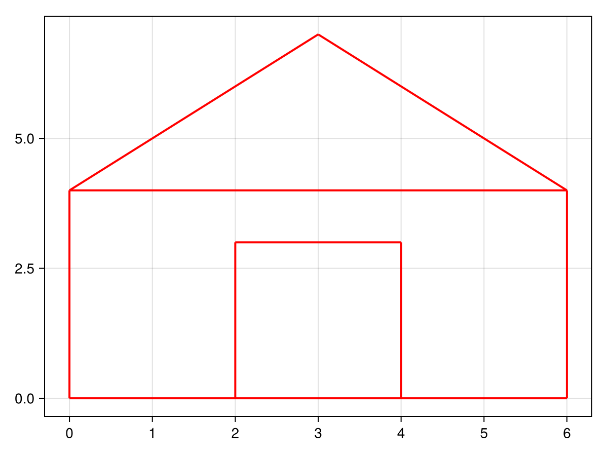

2D PGA Transformations
In this example we will illustrate, with the help of the CairoMakie, library, a drawing of a house rotated and translated in the plane so that we can apply geometric-algebra transformations to place it in an ideal position, which will be done in the projective plane (2DPGA).
pga = Algebra(2,0,1)Points and Lines
To construct a point, we will create a data type to represent it, as well as a function for its construction.
mutable struct Point
mv::GAType
end
# P = (x, y)
point = (x::Number, y::Number) -> return Point(-x*e0e2 + y*e0e1 + e1e2)Similarly, to construct a line segment, we create a data type to store the line object between two points, as well as the start and end points of that segment.
mutable struct Segment
mv::GAType
start_point::Point
end_point::Point
end
# S: Line from point `a` to point `b`
segment = (a::Point, b::Point) -> return Segment(a.mv & b.mv, a, b)Transformations
Now we can create the transformation functions, such as translation:
# Translate Point 'a' by (tx,ty)
function translate(a::Point, tx, ty)
T = 1 + (tx*e1 + ty*e2)*e0/2
return Point(T * a.mv * T^-1)
end
# Translate Segment 'a' by (tx,ty)
function translate(a::Segment, tx, ty)
T = 1 + (tx*e1 + ty*e2)*e0/2
return Segment(T*a.mv*T^-1, Point(T*a.start_point.mv*T^-1), Point(T*a.end_point.mv*T^-1))
endAnd also rotation:
# Rotate Point 'a' by an angle 'n' rad from the origin (0,0)
function rotate(a::Point, n)
R = exp_ga(-e1e2*n/2)
return Point(R * a.mv * R^-1)
end
# Rotate Segment 'a' by an angle 'n' rad from the origin (0,0)
function rotate(a::Segment, n)
R = exp_ga(-e1e2*n/2)
return Segment(R*a.mv*R^-1, Point(R*a.start_point.mv*R^-1), Point(R*a.end_point.mv*R^-1))
endRendering
Let us now initialize the scene using CairoMakie, which should generate an image like the one below:
# Scene
fig = Figure()
ax = Axis(fig[1,1])
# Construct a house with segments
objects = Segment[]
push!(objects, segment(point(1, 2), point(1, 8)))
push!(objects, segment(point(1, 8), point(-3, 8)))
push!(objects, segment(point(-3, 8), point(-3, 2)))
push!(objects, segment(point(-3, 2), point(1, 2)))
push!(objects, segment(point(-3, 2), point(-6, 5)))
push!(objects, segment(point(-6, 5), point(-3, 8)))
push!(objects, segment(point(1, 6), point(-2, 6)))
push!(objects, segment(point(1, 4), point(-2, 4)))
push!(objects, segment(point(-2, 6), point(-2, 4)))
# Render everything with CairoMakie
for obj in objects
lx = [-obj.start_point.mv[e0e2], -obj.end_point.mv[e0e2]]
ly = [obj.start_point.mv[e0e1], obj.end_point.mv[e0e1]]
lines!(ax, lx, ly, color = :red, linewidth = 2)
end
save("2DPGA.png", fig)Result
Finally, we will apply the correct rotation and translation transformations to the image:
# Translate everything by (-1, -2) -> Origin
objects = map(a -> translate(x, -1, -2), objects)
# Rotate everything by -pi/2 rad -> Right direction
objects = map(a -> rotate(a, -pi/2), objects)Finally, rendering the new image now we have:
